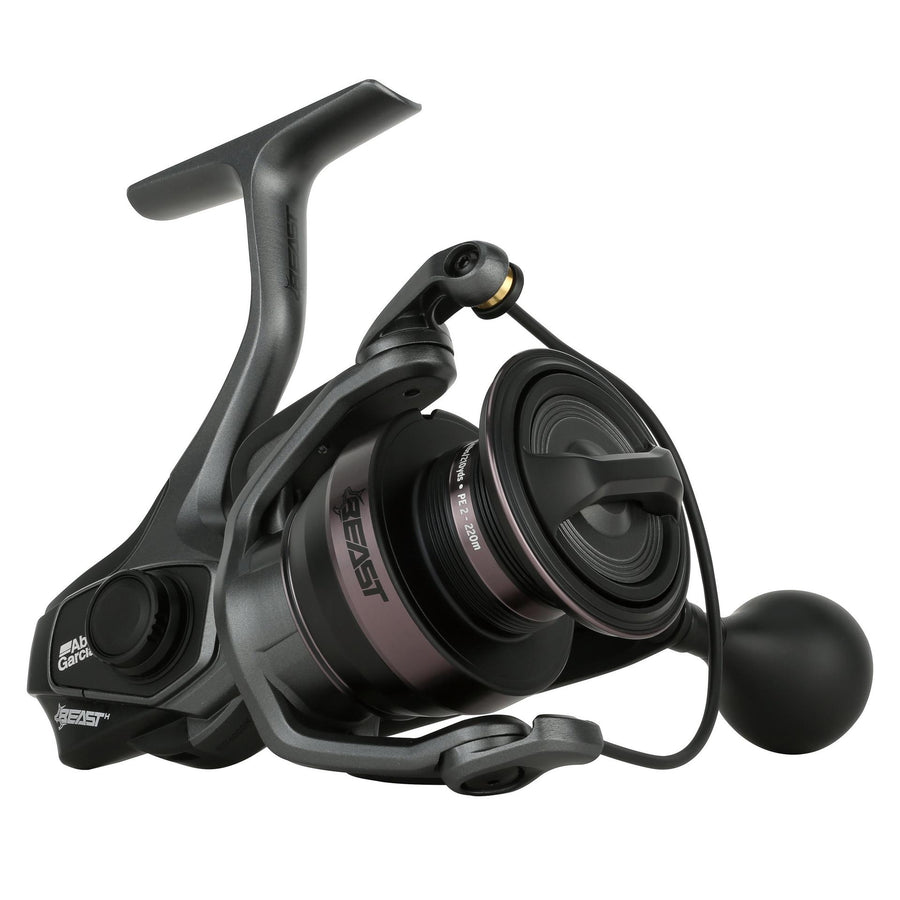

ReelCalc Reel Setup Guide
Abu Garcia Beast Spinning 4000H Line Capacity & Reel Setup Guide
For a heavier bass or inshore spinning setup, the Beast 4000H starts with a published 12 lb / 180-yard mono capacity. Its Power Stack Carbon Matrix Drag System provides the reel's stopping power; choose your fishing drag for the line and rod, not the maximum rating. The calculator is set to this exact model so you can compare a full spool with an optional-backing setup.